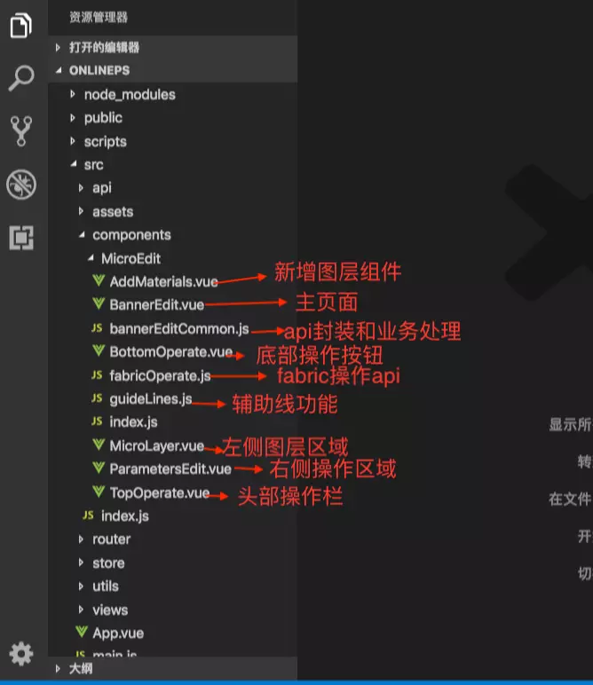

本系统是基于fabric.js实现的canvas版图片,文本编辑器,支持对图片的放大,缩小,旋转,镜面翻转,拖动,显示/隐藏图层,删除图层,替换图层等操作,对文本支持修改文本内容,颜色,字体,加粗,斜体,下划线,背景色等,同时支持图片已有的操作,拖动图层有辅助线功能,可对画布做放大缩小功能,多操作可撤销/回退功能,可直接导出图片,ps基本操作都已支持,欢迎star.

fabric 文档地址 http://fabricjs.com/ 由于中文资料很少,使用过程中也遇到了很多问题,找了好多资料总算是把功能都实现了,如果有在使用这个的小伙伴有什么问题可以找我沟通.首先需要熟悉canvas的基础,然后在去使用这个库会很容易上手.
这个是项目中做的功能,由于过程比较坎坷,fabric.js库很强大,但是中文资料很少,导致解决问题的时候花费了很多功夫,所以摘出来供需要的人使用,由于有些东西需要后端配合,所以把一部分功能砍掉了,所有代码中有一些冗余代码,大家有需要那些功能的也可以宅后台配合把这些功能也做起来,前端的逻辑都已经实现了.
原文地址 https://juejin.im/post/5d400732e51d45620c1c5337